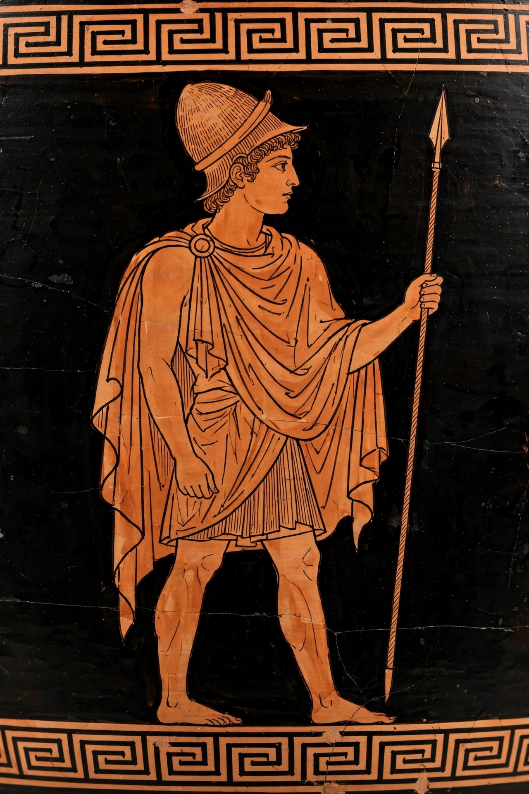

Alcmaeon
In Greek mythology, Alcmaeon (Ancient Greek: Ἀλκμαίων, Alkmaiōn) was the son of the seer Amphiaraus and Eriphyle. He led the second expedition of the Epigoni against Thebes and is the central figure of a cycle of vengeance: he killed his own mother to avenge his father, was pursued by the Erinyes, and was finally murdered himself over the cursed necklace of Harmonia.

| Alcmaeon | |
|---|---|
| Parents | Amphiaraus and Eriphyle |
| Siblings | Amphilochus |
| Consorts | Alphesiboea; Callirrhoe |
| Offspring | Acarnan and Amphoterus (by Callirrhoe) |
Myth
Amphiaraus, foreseeing his death in the war of the Seven against Thebes, hid to avoid the expedition, but Eriphyle — bribed by Polynices with the necklace of Harmonia — betrayed his hiding place. Before departing, Amphiaraus ordered his sons to avenge him. Ten years later Alcmaeon led the Epigoni to victory over Thebes and then, urged by an oracle, killed Eriphyle. Pursued by the Erinyes, he found purification and a new, unwasted land at the mouth of the Achelous river, where he founded a city and married Callirrhoe. When she demanded the necklace and robe of Harmonia, Alcmaeon returned to Psophis to retrieve them and was murdered by the sons of King Phegeus.
Alcmaeon was the subject of lost epics (the Alcmaeonis) and tragedies by Sophocles and Euripides, and his story is told in Apollodorus's Library and by Pausanias.
See also
Categories: Characters in Greek mythology · Epigoni